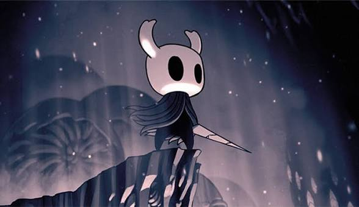

Just taking a small look at ari gibsons sketchbook shows us just how much thought and love was put into this game . We really need to praise ari gibson for his immaculate skills at drawing and animating.

Hollow knight, Oh boy where do I even begin, this game has had such a chokehold on me ever since I played it back in the big 2020 . Everything about this game is near perfection, the gameplay, the bosses , the art , the music . To think this game was made by a small team of 3 people , while having to survive the uncharted lands known as australia is just unbelievable. To express the love I have for this game, I'll be dividing it into talking about each aspect seperately.
Just taking a small look at ari gibsons sketchbook shows us just how much thought and love was put into this game . We really need to praise ari gibson for his immaculate skills at drawing and animating.
!! A fun trivia for you : the reason for hollow knight's world feeling more 3d by moving the background was done through a small trick called the "the parallax effect " for acheiving this effect , they loaded different layers containing different background elements into unity and layering them on top of each other , further a layer was , slower were the objects at taht distance moving.
Oh boy , the music , OOOH the music is just chef's kiss in this game, christopher larkin didn't leave any room for error with the music, the world building of the game is just enhanced tenfold by the use of the immaculate soundtrack. If you've played the game , you'd know Just how perfectly the entrance into the proper city of tears is, I think we can all agree that it wouldn't be the same without the music
I would be lying if I said i haven't rage quit the game countless times due to the bosses and the enemies, (Yeah , im talking about you primal aspid, SCREW YOU!) but as much as it is frustatiing to die, its even more rewarding when you finally beat that boss you were struggling with
I won't go too deep into the story if there's somebody reaading this who wants to play the game (you should, this is not a request.). The story is a complete package, while still leaving things up to the player's interpretation , the world building is done so well that the player doesn't feel that the world is revolving around them , rather they are just a part of the world. While not a lot, there are some characters that move to different areas as you progress the game , making the world feel lived in and not stagnant. The game has multiple endings. The revelation of who the player character is in a cutscene is just jaw dropping.
Hey! whoever you are, thanks for taking out time to read my website which is just a glorified yap session, but I really do love this game , so being able to talk about it makes me very happy :P